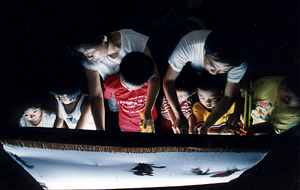
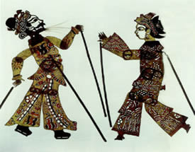
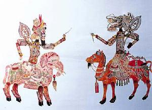
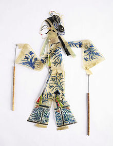
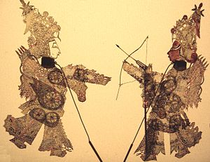

|
|
Folk Arts > Shadow Play
Shadow Play and Teacher Huang
Shadow Play has been the folk art for which Teacher Huang has the most passion and experiences. He led An-Jing Elementary School students to participate in the shadow play competition and won the honor of 10-peat. He may promote shadow play in many schools, but also lets us enter the world of shadow play.
 |
 |
| Source of picture [Note 5] |
Source of picture [Note 6] |
Shadow play: In the middle age of the Qing dynasty, shadow play was spreading in Taiwan. It was also called “Pihou show” or “Pi Show”. The music accompanying the show is called “Chou tone”. This has been spreading among villages of Gaoxiong and Pingdong areas. It once entered city theaters, but was just used to fulfill audience curiosity and quickly fell back to village thatched stages. Taiwan shadow play preserves many shadows of Nan show from Yuan and Ming Dynasty. It contains certain reference values for research of history of Chinese drama. Right now, Taiwan shadow play is facing the crisis of being lost. Shadow play is our folk art containing painting, carving, opera, music, and opera performance, and is a drama that integrates all arts together. The performance of shadow play uses a shadow window pasted with thin cattle or sheep leather, and then used light to project the shadow of paper puppets or leather puppets on the window. The show is accompanied with music and opera to express the story of performed drama. It is a plain arts style, but contains the interests that are totally different from real actors onstage. In the developing history of Chinese drama, shadow play is possibly the earliest drama performance in China. [Note 2]
History of Shadow Play:
Shadow play has been spreading for long time. It started from Han Dynasty, rose in Tang Dynasty, and prospered in Song Dynasty.
1. During the years of Emperor Han Wudi [Note 1]
2. South Song Period
3. Emperor Ming Shenzhong Period
4.Qing Dynasty
| The Period of Dissemination After Crossing Sea |
The sea crossing dissemination period was the developing stage after Cheng-Gong Zheng in Ming Dynasty crossed the sea to get to Taiwan. We assumed that the soldiers following Zheng to cross the sea or the immigrants in early Qing Dynasty must have included a shadow play master from Fujian Quan Zhang areas. The developing areas for shadow play in Taiwan were majorly in the south of Tainan City, including the flat areas of Gaoxiong county and Pindong County. The development of Zheng and Qing immigrants was mostly in south Taiwan, so the foundation of shadow play was laid in Taiwan. |
| The Period of Flourishing in Qing Dynasty |
The evolution of Taiwanese history went through upheaval during the early Qing Dynasty. The development became stable until the middle of the Qing Dynasty. The positive development in politics, economy, and society provided fertile soil for the development of folk drama. The town and villages in the wide flat areas of south Taiwan were in the stages of development of shadow play. |
| The Period Being Suppressed in Japanese Occupation |
In the early period of the Japanese Occupation, shadow play was active. Many handwritten copies can prove, for that period of time. The handwritten copies of the Qing Dynasty show the spectacular development of shadow play in Taiwan, especially in Gaoxiong County and Pindong County. Many handwritten copies explain the heavy demand of performances. As far as the performing style, there was only black, red and green; the three major colors for the puppets. The style was simple and coal oil light was used to project the shadow to the window. |
| The Period of Revival After Retrocession |
After Taiwan was recovered in 1945, shadow play entered its renaissance period. In other words, it returned to the spectacular condition before Japanese Occupation. Depending on the area, the performing formats are divided into inside stage (in theater) and outside stage (non-theater). Each has its own feature. The inside stage of shadow play started to perform on September 7, 1912. Donghua shadow play group started the record to perform in the Culture Theater of Chiayi City. In this period of time, shadow play had to compete with other traditional folk operas to win a spot for playing in the theater. Inside shows need to sign a contract with the theater to specify the performance schedule, drama and payment details. The stage inside the theater is bigger than the stage in a normal temple. Also, due to the fierce competition for commercial profit, performing style was changed to use Chinese and western instruments, and accompanied with a female singer. Another characteristic of this period was the change brought in by the policy of anti-communism and resisting Russia. |
| The Period of Being Bruised by Television |
Like the other folk dramas, shadow play entered the slow period after television stations and color television rose. That is, audiences only needed to stay with their television, even if it was black and white television, they could watch all kinds of programs. Television programs provided quickness, convenience and comfort that the performance in the theater of temple festivals could not do. The television programs have changed the entertainment styles of people, and absorbed big amounts of audience. And hence, folk dramas gradually retrieved from theaters, and fell back to the original outside stage market. The cheap television programs also affected other drama markets. In temple festival performance or weddings, cheap television programs and exciting dancing groups or bands gradually swallowed the market. Therefore, traditional operas were facing survival crises. In 1960, there were 9 shadow play groups registered in Gaoxiong County, but only 4 groups were left in 1971. |
| The Period of Being Fostered By the Government |
After entering the Chiang Ching-kuo age, the cultural development of Taiwan, especially for the local culture, started to take off. On November 11, 1981, Executive Yuan finally established Cultural Development Community Association to manage nationwide cultural affairs. The government also announced “Cultural Heritage Preservation Act Enforcement Rules”. Shadow play entered the period of being fostered by the government. In 1985, the Ministry of Education issued the first National Arts Xinchun Award, and De-cheng Zhang from Donghua received the award. Fu-nen Xu from Fuxin Ge also received the same award the next year. The government finally affirmed outstanding masters of shadow play. In this period, the government helped to preserve and promote shadow play
. The Shadow Play Theater was formed in 1994. The Culture Center of the theater was responsible for the work of preservation and promotion. In 2004, they digitalized the cultural relics they hold, and provided digital learning systems for audiences to learn shadow play more conveniently. There are three directions of the promotion for shadow play including shadow play studies, campus shadow play competition, and shadow play tour. From 1993, shadow play study for teachers of elementary school and junior middle high school was held every year. Shadow play arts studies were assertively opened to the public at the same time. [Note 4]
|
 |
 |
| Source of picture [Note 3] |
Source of picture [Note 3] |
The Past, Preservation, and Future of Shadow Play
It was attached to rural life and became the most convenient form of entertainment.
For children, shadow play satisfies their curiosity to the fake character with real personalities in performing arts. This little shadow window was a full screen drama in children’s minds. This was the only surviving environment for shadow play in city theaters. Unless its art performance could provide new ideas to earn attention, the small play stage of shadow play could not compete with city theaters, and could only survive in poor and remote village environments. In a village society, living conditions were poor, but people’s needs for arts and entertainment were alike for the poor and rich. There were no big drama stages or city prosperous views for villagers to linger on. The happiness, anger, sorrow, joy, and the viewpoints of right and wrong from historical figures and legendary stories were still attractive to people. Without big funds to prepare splendid props and a stage, leather was convenient to prepare for the concept of puppets. With a few gongs, drums, and blowing instruments, alley folk songs were performed. There was no leisure time concept during the daytime, and at night, no sunlight for farming. Shadow play simply became the most simple and convenient drama entertainment in village society. As an old poem says, “Two hands lift up ancient generals, and a single light projects out ancestors”.
Shadow play has lost a lot of its culture and is very difficult to be preserved.
Since the Qing dynasty, shadow play in Taiwan has been spreading in the villages of the Gaoxiong area. In order to fulfill the curiosity of audiences, it once entered city theaters, but quickly fell back to the countryside. In the recent ten years, the “voice” for protecting traditional arts culture helps local traditional opera arts to have many opportunities to show up in city theaters and media. However, everyone noticed the deficiencies, such as the opera music and action figures, of the Taiwanese shadow play. We don’t know if this is the original shadow play art, or that skills have been lost through generations to form today’s ruins scene. However, from the viewpoint of culture, we must preserve the dying traditional cultures in modern society and find a good way to save them. The best way is to bring them back to a stage of higher art to preserve them. This seems impossible to do, at least according to what we are doing now.
In the future, it can be widely used in children’s education.
Today, the performing art connotation of Taiwanese traditional shadow play is limited. For the preservation of traditional arts culture, one method for shadow play is doable and can show surprising results in today’s society. That is to apply shadow play in children’s drama and education.
In 1980, with the support of the Shih Ho-Cheng Folk Cultural Foundation, Professor Shen-liang Chiou held Shadow Play Study to invite shadow play masters to teach thirty to forty members the skills of traditional Taiwan shadow play. Some of these members were arts teachers of elementary schools and junior high schools. After the study, they applied what they learned from the study about shadow play skills in their teaching, and discovered unprecedented teaching results. To apply shadow play into education, it involves too much content, from carving puppets to the stage of performance. For example, carving puppets includes art items for drawing, picture composition, painting, color, and carving. Besides, writing a play, the spoken part in opera, style of singing, music, drama, history, spatiotemporal management and understanding of group work grow children’s multiple interests in art and education in humanity. This enriches teaching content and enhances teaching results. This creates new opportunities for traditional arts cultures.
The preservation of traditional art and culture is our urgent priority, but current art and culture policy is slow and incorrect, such as the Xinchun event for shadow play national masters. We are worried about how to preserve traditional art and culture. Instead of asking students to memorize boring dogmas like “Life and Ethics” and “Tang Poem and Song Verse”, we should teach students to realize and implement them through art classes. This may produce unexpected results for the preservation of traditional culture and art creation. [Note 2]
 |
 |
| Source of picture [note 1] |
Source of picture [note 1] |
Shadow Play Characters:
Following the custom of traditional opera, shadow play characters are divided into Shen, Dan, Jing, Mo, and Chou five categories. A special thing is that each character is assembled with 11 pieces including the head, upper body, lower body, two legs, two upper arms, two lower arms and two hands. A performer controls the master lever in front of neck and two play poles on both hands of the puppets to perform all kinds of actions. [Note 3]
Shadow Play Performing Format:
The performing requirement for shadow play is quite high. The performer has to control actions of 3 or 4 puppets alone, coordinate with the accompanying music, and do voice-overs. The singing voice, operating skills, and singing skills, are the key to shadow play levels.
The equipment of shadow play is very simple and convenient, so show groups have the advantage of tour performances. This is also why shadow play was widespread and popular. Shadow play performs diverse plays including historical novels, folklores, martial arts, love stories, myth fables, modern fashion, and so on. The list of plays on zhezi play, single play and continuous play are more diverse. [Note 3]
Shadow Play Music:
The music of shadow play uses gongs and drums. There are two purposes for gongs and drums to accompany the shadow play. One is to divide the sentences or emphasize the voice, and another is to bloat the dramatic effect. The opera voice is mostly in Chou tone. Since the music is similar to the one Taoists play in a funeral, it is also called “Shigong tone.” The plays are divided into literal, martial, and literal-martial depending on the contents of the performance. The literal one mostly performs with singing songs, and requires musical accompaniment. [Note 4]
Shadow Play Operation: [Note 4]
1. On ground: except for flying animals, humans and animals must perform on ground.
2. Close to screen: The shadow shows clearly when the puppet is close to the screen. The color of the puppets and beauty of carving can then be clearly shown through the screen.
3. Turn body: The skill of turning the puppet body is to use the lever on the neck as the center of the circle, and withstand the screen to do the rotation.
4. Flying: Operate puppet from side and emphasize vibration of wings.
5. Others: besides the most common actions described above, other special actions are in this category.
Shadow Play Materials:
1. Cardstock
2. Color grass paper or painted by water or oil color pen.
3. Art knife
4. Scissor
5. Protecting shell
6. Glue film
7. Brads
8. Bamboo stick
9. Scotch tape, awl for double sides adhesive tape, and cutting pad
Shadow Play Making:
Semitransparent puppets are made through the procedure of selecting leather, soaking, scratching, polishing, designing, carving, coating oil, and installing wire. The light projects the shadow of puppet onto the screen. The shadow lively moves with dreamy beauty, and accompanies the graceful music and exciting gongs and drums. The performance is called shadow play. This is a synthetic art that collects literature, music, painting, craft, and drama into one.
1. The designing point of puppet is on the side.
2. Use different knife to carve different pattern.
3. Need to learn Yang carving and Yin carving.
4. Use color of red, yellow and black to paint puppets of animals. The leather needs to be ironed out after painting.
5. After carving, drill holes in fixed location, and then use brad to connect hands, body, and legs. A puppet is then completely assembled.
6. Add one piece of extra leather on the neck position, and use thin iron wire to make a device so that puppet head can be randomly taken out and put in.
7. Cut bamboo into round shape operating pole, and then install the pole onto the puppet. [Note 4]
Reference: (Except the notes, the text and pictures on these pages were based on interview transcriptions, photographs and writing taken by the project team.)
Note1: http://zh.wikipedia.org/wiki/%E7%9A%AE%E5%BD%B1%E6%88%B2
Note2: http://www.100big.com.tw/cgi-bin/art/05.htm
Note3: http://www.baike.com/wiki/%E7%9A%AE%E5%BD%B1%E6%88%8F
Note4: http://shadowlessona.kccc.gov.tw/a03.htm
Note5: http://www.fromheart.com.tw/mbantreef.asp?BBanNo=H&MBanNo=H01
Note6: http://www.peopo.org/news/53825

|